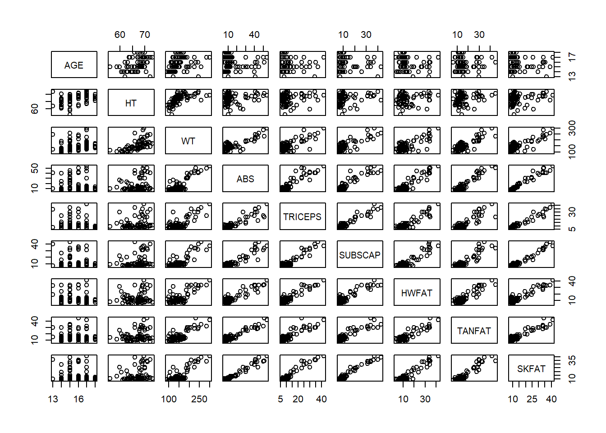
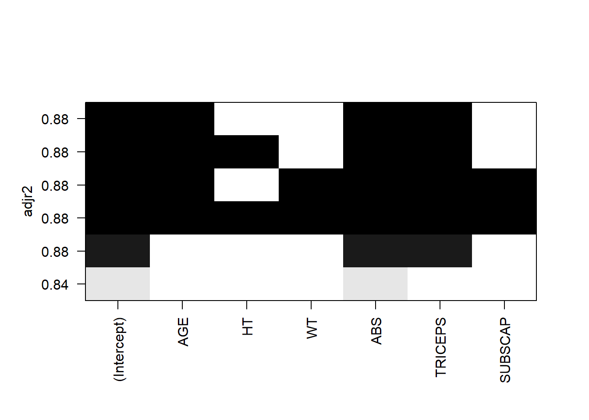
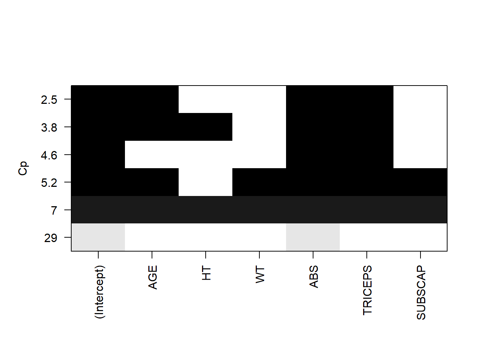
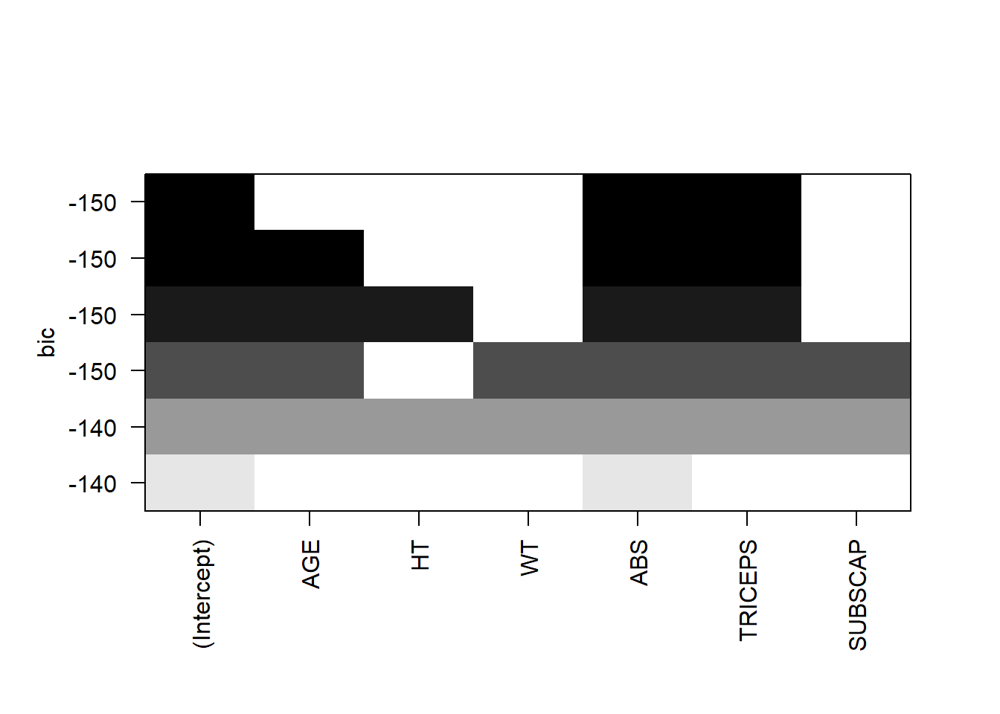

2 Example 1: Methods for Variable Selection
We have looked at the data for 78 high school wrestlers taken to understand body fat content measurements using three different body fat measuring techniques: hydrostatic weighing (HWFAT), skinfold measurements (SKFAT), and the Tanita body fat scale (TANFAT). In this example, we will create a regression model to predict the wrestlers’ hydrostatic fat HWFAT using other variables in the dataset. The question we answer with model selection is: what are the best predictors of HWFAT?
Data: HSwrestler
Columns:
AGE - Age of wrestlerHT - Height in inchesWT - Weight in poundsABS - Abdominal fatTRICEPS - Tricep fatSUBSCAP - Subscapular fatHWFAT - Hydrostatic fatTANFAT - Tanita fatSKFAT - Skin fat
Read in the data by using:
2.1 Backward Elimination and Forward Selection
- Exploratory analysis: use
pairsto visualise the data and determine which predictors may be useful in predictingHWFAT.

We can see that there are many positive relationships with HWFAT, mainly SKFAT, HWFAT, SUBCAP, TRIPCEPS, ABS and WT. The only variables that do not seem to have a positive relationship with HWFAT are AGE and HT.
You can get a little more information by calling another function from the car package:
- Backward elimination starts with all the variables in the model (
model.all) and eliminates variables with the largest (least significant) \(p\)-values. The period in the short-hand notationHWFAT ~ .tells R to include all of the variables specified in the data argument. In this case, the variablesTANFATandSKFATare removed using negative indices. Do this in two steps, first fitting the full model (all variables), and then removing the least significant variable.
model.all <- lm(HWFAT ~ . , data = HSwrestler[,c(-8,-9)])
summary(model.all) # Take note of which are least significant##
## Call:
## lm(formula = HWFAT ~ ., data = HSwrestler[, c(-8, -9)])
##
## Residuals:
## Min 1Q Median 3Q Max
## -6.162 -1.858 -0.464 2.502 8.177
##
## Coefficients:
## Estimate Std. Error t value Pr(>|t|)
## (Intercept) 13.29370 9.63027 1.380 0.1718
## AGE -0.32893 0.32158 -1.023 0.3098
## HT -0.06731 0.16051 -0.419 0.6762
## WT -0.01365 0.02591 -0.527 0.5999
## ABS 0.37142 0.08837 4.203 7.55e-05 ***
## TRICEPS 0.38743 0.13761 2.815 0.0063 **
## SUBSCAP 0.11405 0.14193 0.804 0.4243
## ---
## Signif. codes: 0 '***' 0.001 '**' 0.01 '*' 0.05 '.' 0.1 ' ' 1
##
## Residual standard error: 3.028 on 71 degrees of freedom
## Multiple R-squared: 0.8918, Adjusted R-squared: 0.8827
## F-statistic: 97.54 on 6 and 71 DF, p-value: < 2.2e-16The summary table lists the \(p\)-value according to the \(t\)-test. Alternatively, we could perform the \(F\)-test by using drop1().
## Single term deletions
##
## Model:
## HWFAT ~ AGE + HT + WT + ABS + TRICEPS + SUBSCAP
## Df Sum of Sq RSS AIC F value Pr(>F)
## <none> 651.05 179.51
## AGE 1 9.594 660.64 178.65 1.0463 0.309839
## HT 1 1.613 652.66 177.70 0.1759 0.676225
## WT 1 2.546 653.60 177.81 0.2777 0.599879
## ABS 1 162.000 813.05 194.84 17.6669 7.549e-05 ***
## TRICEPS 1 72.683 723.73 185.76 7.9264 0.006301 **
## SUBSCAP 1 5.921 656.97 178.21 0.6458 0.424315
## ---
## Signif. codes: 0 '***' 0.001 '**' 0.01 '*' 0.05 '.' 0.1 ' ' 1Both the \(t\)-test and the \(F\)-test show that HT is the least significant. In addition, suppose \(\alpha_\text{crit}=0.15\), then the \(p\)-value corresponding to HT is larger than \(\alpha_\text{crit}\). Therefore we should remove it by using the following code:
To see if we have removed enough predictors, perform a test and re-evaluate as many times as necessary. What variables are included in the final model?
The next variable to be removed should be .
Should you continue removing variables? .
What variables are included in your final model? AGE , HT , WT , ABS , TRICEPS , and SUBSCAP .
## Single term deletions
##
## Model:
## HWFAT ~ AGE + WT + ABS + TRICEPS + SUBSCAP
## Df Sum of Sq RSS AIC F value Pr(>F)
## <none> 652.66 177.70
## AGE 1 9.875 662.54 176.87 1.0894 0.300098
## WT 1 10.554 663.22 176.95 1.1643 0.284169
## ABS 1 189.072 841.73 195.54 20.8580 1.996e-05 ***
## TRICEPS 1 78.809 731.47 184.59 8.6941 0.004302 **
## SUBSCAP 1 5.693 658.36 176.38 0.6281 0.430660
## ---
## Signif. codes: 0 '***' 0.001 '**' 0.01 '*' 0.05 '.' 0.1 ' ' 1- We can also perform model selection the other way around by adding one variable at the time. The functions
add1()andupdate()are used to create a model using forward selection. In forward selection, the initial model only has an intercept (no predictors). The steps are the same as in backward selection.
# We define SCOPE - an object to help us keep track of the variables we can add
SCOPE <- (~ . + AGE + HT + WT + ABS + TRICEPS + SUBSCAP)
# Fit initial model
mod.fs <- lm(HWFAT ~ 1, data = HSwrestler)
summary(mod.fs)##
## Call:
## lm(formula = HWFAT ~ 1, data = HSwrestler)
##
## Residuals:
## Min 1Q Median 3Q Max
## -10.655 -5.508 -3.100 1.182 27.655
##
## Coefficients:
## Estimate Std. Error t value Pr(>|t|)
## (Intercept) 14.235 1.001 14.22 <2e-16 ***
## ---
## Signif. codes: 0 '***' 0.001 '**' 0.01 '*' 0.05 '.' 0.1 ' ' 1
##
## Residual standard error: 8.84 on 77 degrees of freedom## Single term additions
##
## Model:
## HWFAT ~ 1
## Df Sum of Sq RSS AIC F value Pr(>F)
## <none> 6017.8 340.97
## AGE 1 175.0 5842.8 340.67 2.2765 0.1355
## HT 1 117.8 5900.0 341.43 1.5175 0.2218
## WT 1 3237.6 2780.2 282.74 88.5045 2.219e-14 ***
## ABS 1 5072.8 945.0 198.57 407.9929 < 2.2e-16 ***
## TRICEPS 1 5056.3 961.5 199.92 399.6462 < 2.2e-16 ***
## SUBSCAP 1 4939.0 1078.8 208.90 347.9456 < 2.2e-16 ***
## ---
## Signif. codes: 0 '***' 0.001 '**' 0.01 '*' 0.05 '.' 0.1 ' ' 1The variables ABS, TRICEPS and SUBSCAP all have very small \(p\)-values (< 2.2e-16). Therefore in this case, we simply take the first variable.
##
## Call:
## lm(formula = HWFAT ~ ABS, data = HSwrestler)
##
## Residuals:
## Min 1Q Median 3Q Max
## -9.0920 -2.1788 -0.3144 2.2722 10.7798
##
## Coefficients:
## Estimate Std. Error t value Pr(>|t|)
## (Intercept) 3.65369 0.65867 5.547 4.05e-07 ***
## ABS 0.63246 0.03131 20.199 < 2e-16 ***
## ---
## Signif. codes: 0 '***' 0.001 '**' 0.01 '*' 0.05 '.' 0.1 ' ' 1
##
## Residual standard error: 3.526 on 76 degrees of freedom
## Multiple R-squared: 0.843, Adjusted R-squared: 0.8409
## F-statistic: 408 on 1 and 76 DF, p-value: < 2.2e-16ABS looks like a good addition. Evaluate your model again and add another variable if appropriate.
Now we repeat steps 1 and 2 until the predictor we add has a \(p\)-value greater than \(\alpha_{\text{crit}}\).
The next variable that should be added is .
Should you continue adding variables? .
Keep in mind the results from forward and backward selection. What variables are included in your final model? AGE , HT , WT , ABS , TRICEPS , and SUBSCAP .
2.2 Criterion-Based Variable Selection
We can also perform variable selection by optimising some criteria. For example, our final model would be comprised of the combination of variables that results in the highest \(R^2_a\) (or another goodness-of-fit metric).
- Use the function
regsubsets()from the packageleapsto build a regression model whereHWFATis the response using the predictorsAGE,HT,WT,ABS,TRICEPS, andSUBSCAPwhen \(R^2_a\) is the criterion used for variable selection.
## Subset selection object
## Call: regsubsets.formula(HWFAT ~ ., data = HSwrestler[, -c(8, 9)])
## 6 Variables (and intercept)
## Forced in Forced out
## AGE FALSE FALSE
## HT FALSE FALSE
## WT FALSE FALSE
## ABS FALSE FALSE
## TRICEPS FALSE FALSE
## SUBSCAP FALSE FALSE
## 1 subsets of each size up to 6
## Selection Algorithm: exhaustive
## AGE HT WT ABS TRICEPS SUBSCAP
## 1 ( 1 ) " " " " " " "*" " " " "
## 2 ( 1 ) " " " " " " "*" "*" " "
## 3 ( 1 ) "*" " " " " "*" "*" " "
## 4 ( 1 ) "*" "*" " " "*" "*" " "
## 5 ( 1 ) "*" " " "*" "*" "*" "*"
## 6 ( 1 ) "*" "*" "*" "*" "*" "*"Since we are evaluating adding or dropping terms based on \(R^2_a\), we can see the difference in each model.
## [1] 0.8409068 0.8801014 0.8849817 0.8846381 0.8840129 0.8826699The output indicates the best single predictor model is that with the variable ABS, and that particular model has \(R^2_a = 0.8409\), the best model with two predictors is the model with the variables ABS and TRICEPS with \(R^2_a = 0.8801\), and so forth. The largest \(R^2_a\) is \(0.8849817\), which corresponds to the model with predictors AGE, ABS, and TRICEPS.
- The best models of each size are stored in the object models, and Mallow’s \(C_p\) values are extracted from the model.
## [1] 29.051861 4.641808 2.541953 3.775400 5.175856 7.000000The smallest Mallow’s \(C_p\) value is \(2.542\), indicating the best model according to Mallow’s \(C_p\) is the one with the predictors AGE, ABS, and TRICEPS.
- Can you think of a way of selecting the best model according to \(BIC\)?
You can try bic. Remember, the lower the \(BIC\) the better.
Just now, we find the best model by looking at the model giving the maximum \(R^2_a\) or the minimum Mallow’s \(C_p\) or BIC and then looking at the predictors corresponding to the best model. A quicker way is to read the results graphically using the function plot. For example



In these plots, each row corresponds to a model, with the top row corresponding to the best model. The shaded blocks indicate that the predictors are selected in this model. For example, in the plot of adjusted \(R^2\), the top row contains four shaded blocks, meaning that the best model is consisted of intercept, age, abs and triceps.
- (optional) Verify that the model selected using AIC as a criterion from the function
stepAIC()from theMASSpackage returns the same model as the model created in (e) using theregsubsets()function.
- Fit a full model.
- Define
SCOPE <- (~.) - Use the function
stepAIC()instead ofadd1(). Be sure to check what parameters it takes using?stepAIC